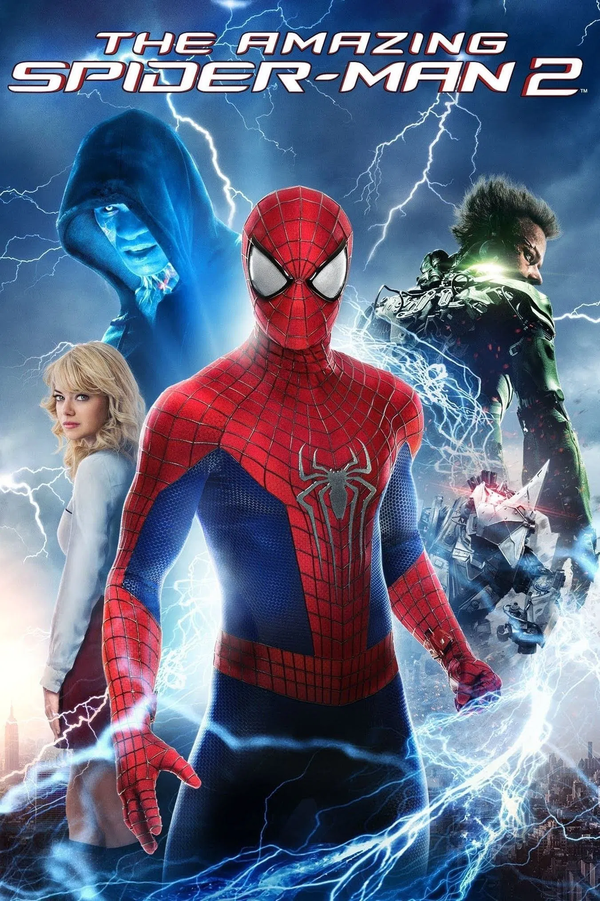
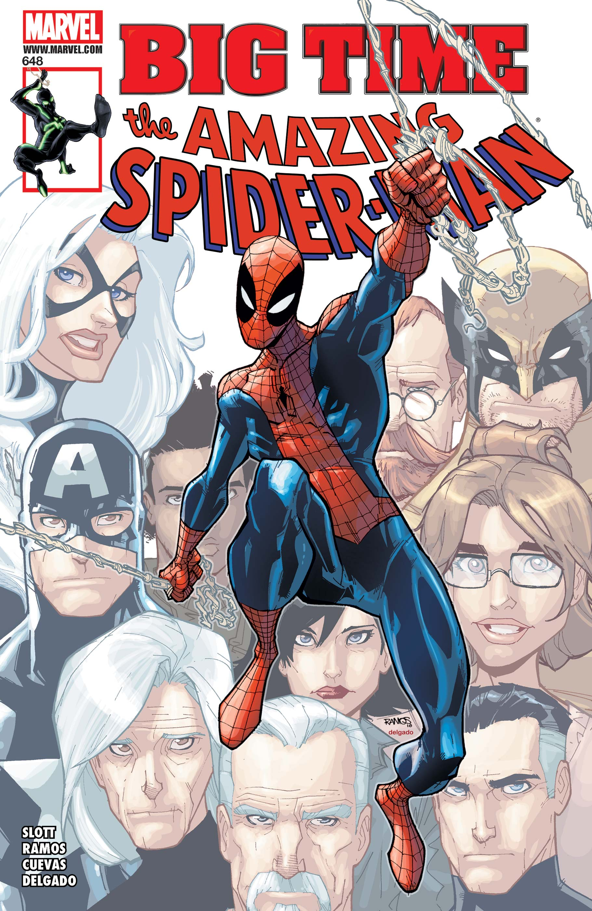
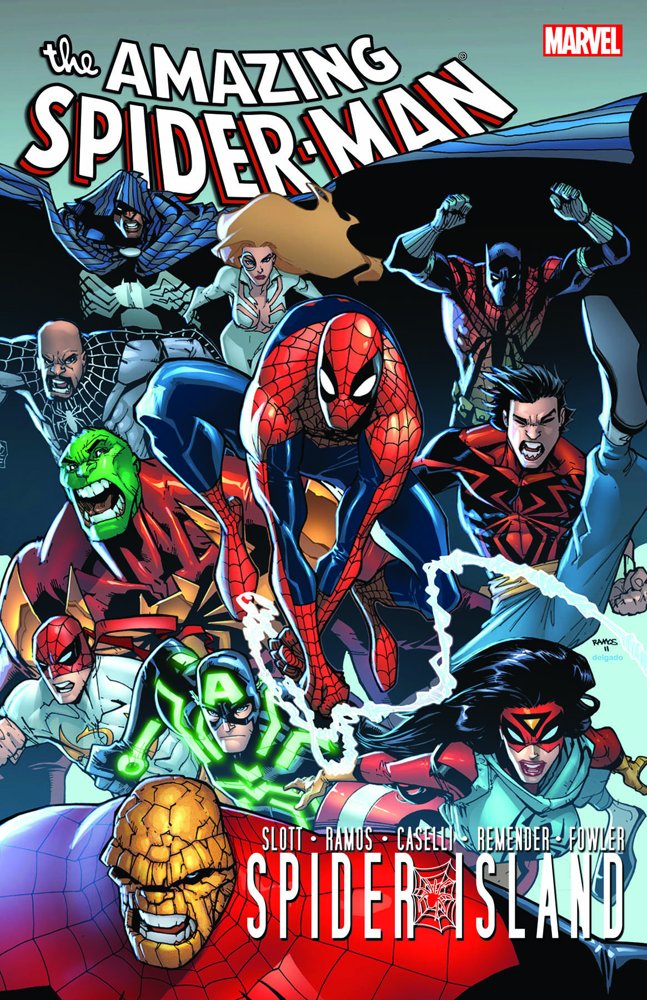
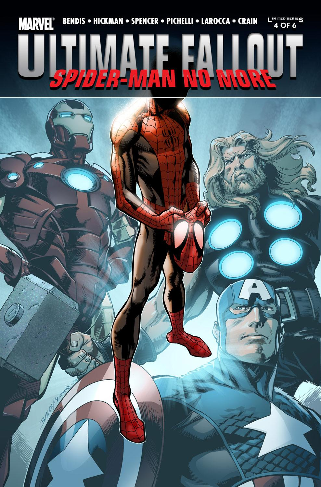
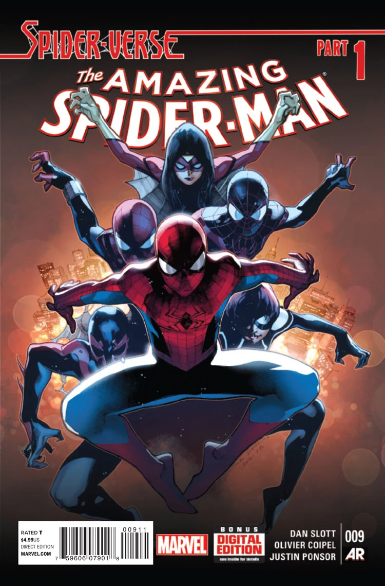
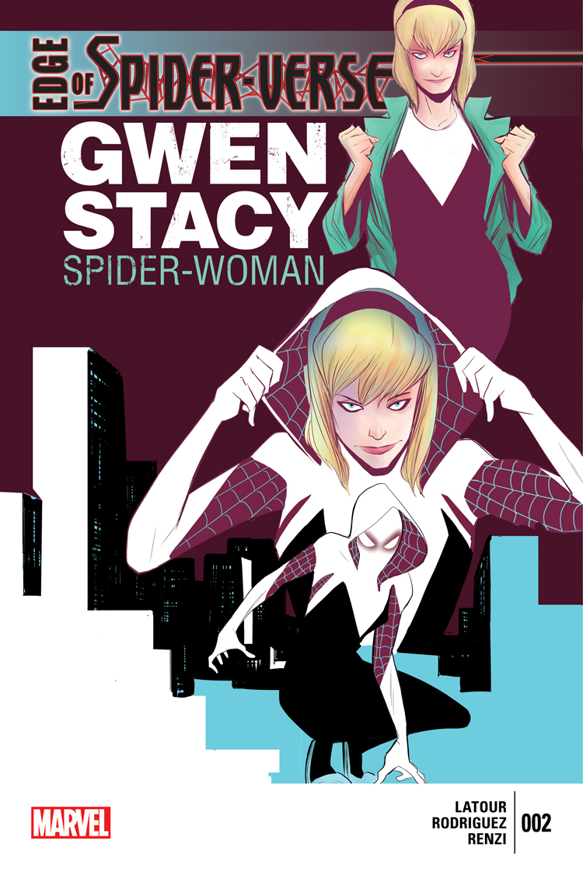
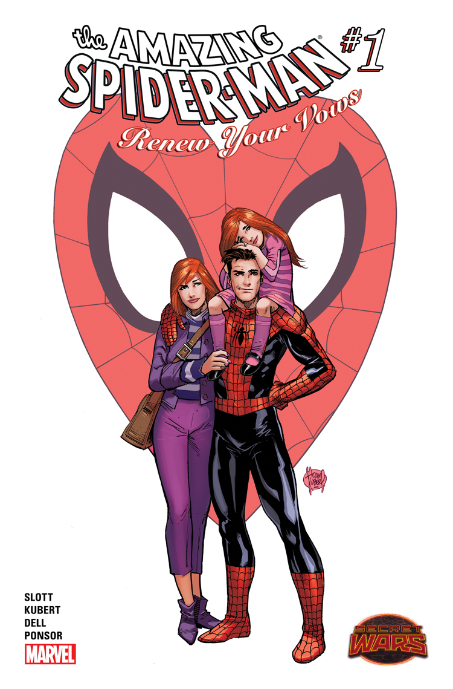

The 2010s blew up Spider-Man’s world: high-tech upgrades, Doctor Octopus
hijacking Peter’s life, new heroes like Miles Morales and Spider-Gwen,
and the multiverse-spanning Spider-Verse. Being Spider-Man
became a legacy, not just one guy in red and blue.
Milestones
Defining Spider-Man issues from the 2010s—status-quo shake-ups,
legacy heroes taking the mask, and a whole web of alternate Spiders.
Years2010–2019
Key creatorsDan Slott, Brian Michael Bendis, Sara Pichelli, Humberto Ramos
Director: Marc Webb · Starring: Andrew Garfield, Emma Stone
A rebooted origin focuses on Peter’s parents, his relationship
with Gwen Stacy, and a more modern, skate-punk version of
Spider-Man facing the Lizard.

Film
The Amazing Spider-Man 2 (2014)
Director: Marc Webb · Starring: Andrew Garfield, Emma Stone, Jamie Foxx
Expands Garfield’s world with villains like Electro and Green Goblin,
while delivering a tragic Gwen Stacy storyline that echoes the comics.
Film
Captain America: Civil War (2016)
Director: Joe & Anthony Russo · MCU debut of Tom Holland’s Spider-Man
Tony Stark recruits a teenage Spider-Man from Queens, introducing a
quippy, nervous Peter Parker who instantly clicks with the MCU.
Film
Spider-Man: Homecoming (2017)
Director: Jon Watts · Starring: Tom Holland, Michael Keaton
A John Hughes–style high school movie where Peter juggles decathlon,
crushes, and stopping the Vulture—proving he can be a hero without
Iron Man’s training wheels.
Film
Avengers: Infinity War (2018)
Directors: Joe & Anthony Russo · Featuring the Iron Spider suit
Peter joins the Avengers in space, dons the Iron Spider armor,
and shares one of the MCU’s most emotional moments when Thanos snaps.
Film
Avengers: Endgame (2019)
Directors: Joe & Anthony Russo · Final battle return
Peter returns after the Blip and swings into the final battle,
reuniting with Tony and helping pass the Infinity Gauntlet
across the battlefield.
Film
Spider-Man: Far From Home (2019)
Director: Jon Watts · Starring: Tom Holland, Jake Gyllenhaal
On a European school trip, Peter faces Mysterio, wrestles with
Tony’s legacy, and ends the decade on a cliffhanger when his
secret identity is exposed to the world.
Award-winning film
Into the Spider-Verse (2018)
The animated film introduces Miles Morales and a whole crew of
Spider-people to mainstream audiences, winning an Oscar and
redefining what a Spider-Man story can look like.
Game changer
Marvel’s Spider-Man (2018) – PS4 Game
The hit video game reimagines an experienced Peter Parker, mixing
classic villains, fluid web-swinging, and emotional storytelling
that pulls from multiple eras of the comics.

Status-quo upgrade
ASM #648–651 (2010) – “Big Time” Begins
Peter lands a job at Horizon Labs and leans into being a science
hero, building new suits and gadgets that kick off Dan Slott’s
long run on the book.

City-wide chaos
ASM #666–673 (2011) – Spider-Island
Everyone in Manhattan gains Spider-Man’s powers, but none of his
responsibility. The event forces Peter to act as a leader while
his entire city turns into a web-slinging disaster zone.

New Spider-Man
Ultimate Fallout #4 (2011) – Miles Morales Debuts
After the death of the Ultimate universe Peter Parker, Brooklyn
teenager Miles Morales takes up the mask, proving that anyone
can be Spider-Man if they live by the same responsibility.
Villain takeover
ASM #700 & Superior Spider-Man (2013–2014)
Doctor Octopus swaps minds with Peter and becomes the “Superior
Spider-Man,” using harsher tactics, spider-bots, and surveillance
to “out-hero” the original.

Multiverse event
ASM (vol. 3) #9–15 (2014–2015) – Spider-Verse
Spider-heroes from across the multiverse—Spider-Gwen, Spider-Man
2099, Spider-Ham, and dozens more—team up as the Inheritors hunt
every version of Spider-Man.

Breakout star
Edge of Spider-Verse #2 (2014) – Spider-Gwen
On Earth-65, Gwen Stacy—not Peter—gets bitten by the spider.
Her punk-rock Spider-Woman design becomes an instant fan favorite
and launches her own series.

What if?
Secret Wars (2015) – Renew Your Vows
In a Battleworld reality, Peter and Mary Jane stay married and
raise a super-powered daughter, Annie. The story imagines a
Spider-Man who never gave up his family.